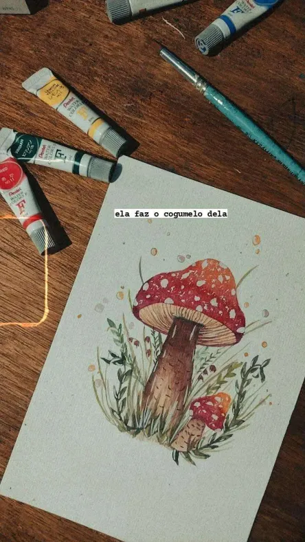
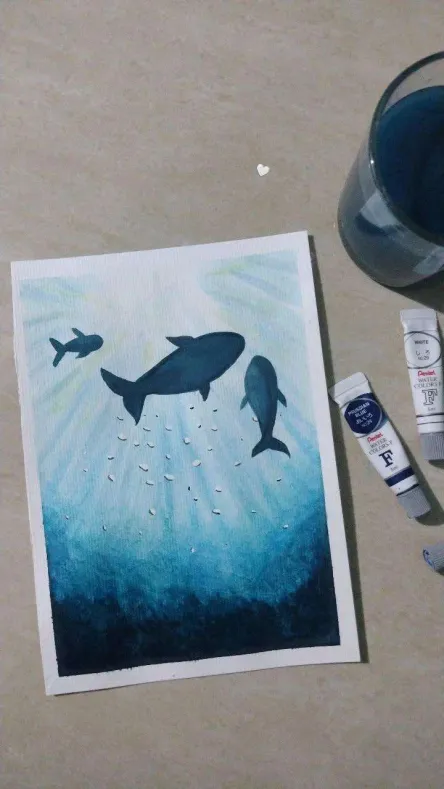
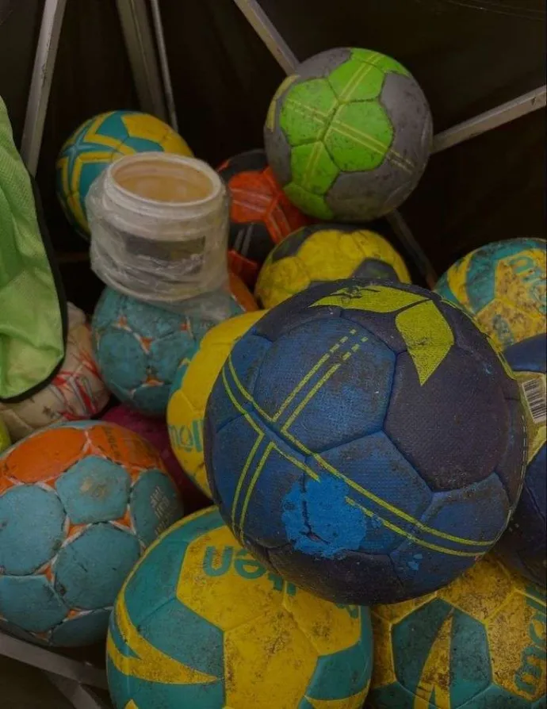

• Beatriz Maia •
Estudante de comunicação | Aspirante a Designer
Sobre mim
Oi! Eu tenho 21 anos, estudo Rádio, TV e Internet e sou apaixonada por tudo que envolve criatividade. Amo desenhar, pintar, ler e sempre tô inventando alguma coisa nova.
Me encontrei de verdade no mundo do design, principalmente em UX e UI, porque adoro pensar em como deixar as coisas mais bonitas, práticas e com a cara das pessoas.
Sou fã de basquete (go Celtics!) e ex-jogadora de handebol — minha carreira acabou por causa de um joelho teimoso, mas a paixão pelo esporte ficou.
Formação
Técnica em Segurança do Trabalho pelo IFPE e atualmente curso Rádio, TV e Internet na UFPE.


